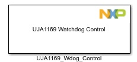
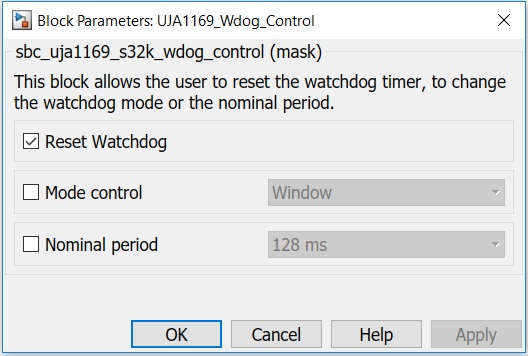

UJA1169 Wdog Control Block
This block allows the user to reset the watchdog timer, to change the watchdog mode or the nominal period.
Block Image
Inputs:
- None
Outputs:
- None
Parameters and Dialog Box
Reset Watchdog
It refreshes the watchdog period by writing byte to the SBC watchdog register.
Mode Control
It allows the user to change the operation mode of the watchdog.
Nominal period
It allows the user to change the nominal period of the watchdog.
Block Dependency
Please do the following:
- Configure the UJA1169 Configuration block.
- Configure the LPSPI Configuration block.
Block Miscellaneous Details
- None
* To get more information refer to Hardware Manual documentation.